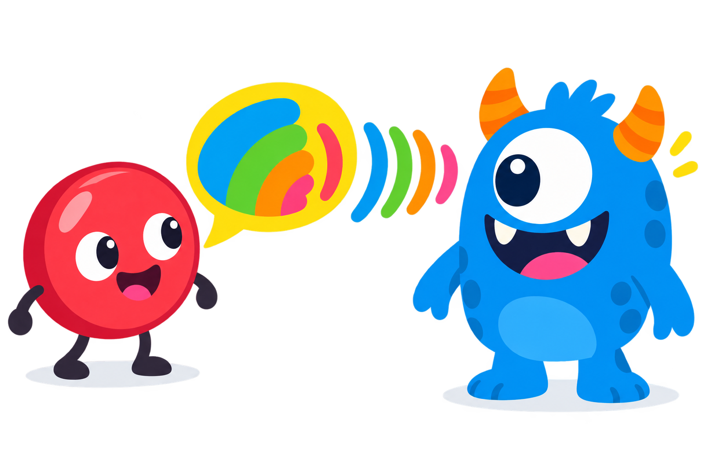

Idéen
En sprite råber en besked, og alle andre sprites kan lytte og reagere. Ligesom når læreren siger "frikvarter!", og alle rejser sig.
Eksempel: Start-knap
Sprite: Knap
når denne sprite klikkes
send besked start
Sprite: Monster
når jeg modtager start
vis
gå til x: 0 y: 100
🎯 Din udfordring
- Lav en knap, der får monsteret til at dukke op og musikken til at starte.
- Lav en besked gameover, som sendes, når monsteret rører helten.
- Lav en "Spil igen"-knap, som sender start igen.
Husk
- Beskedens navn skal staves ens begge steder.
- Mange sprites kan lytte til den samme besked.